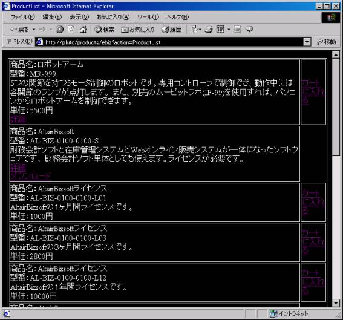
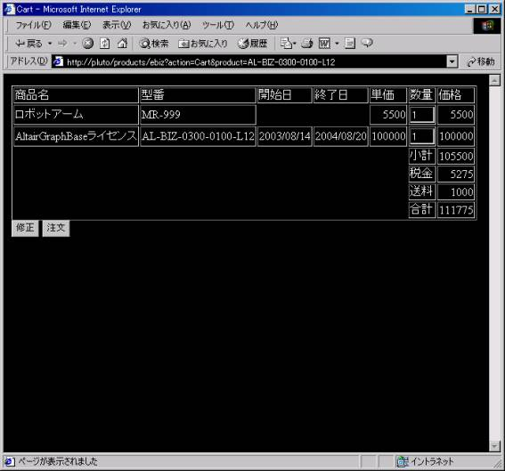
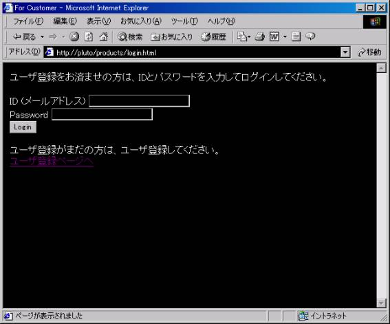
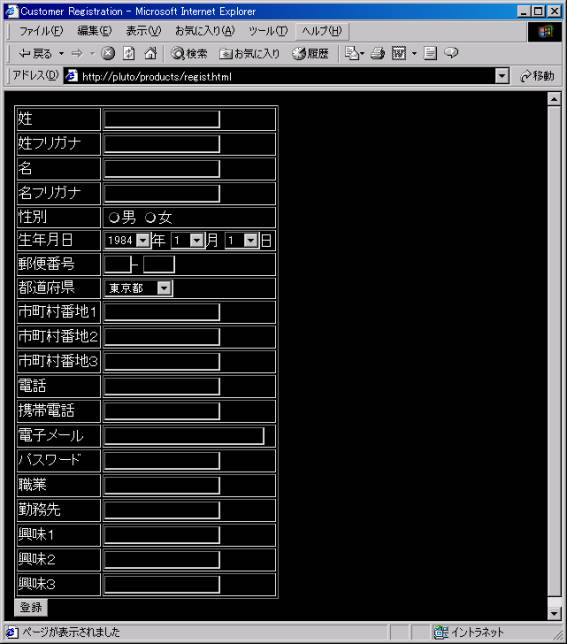
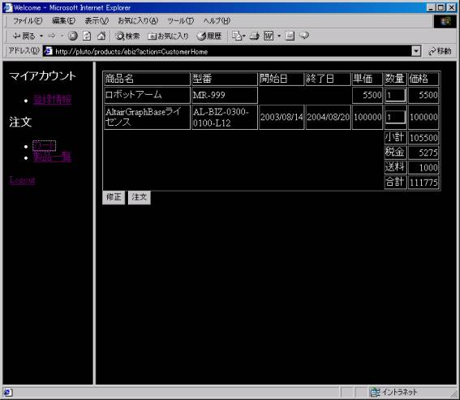
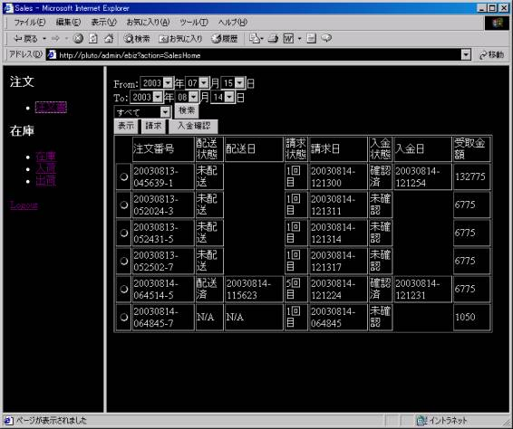
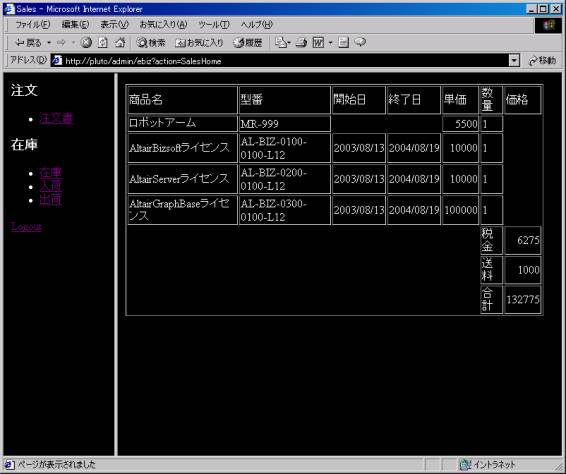
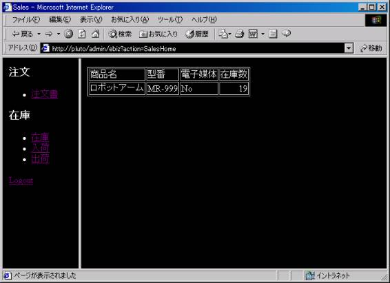
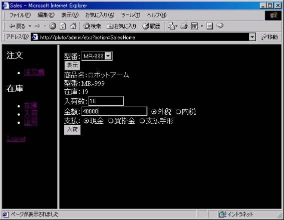
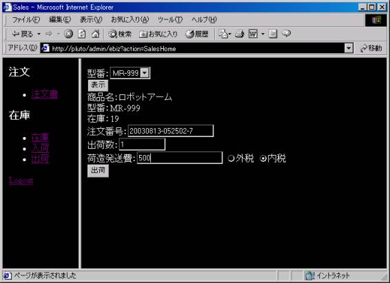

Webショッピングサイトサンプル
第0.43版 2016年10月23日
第0.32版 2003年 8月15日
簡易APサーバに、財務会計ソフトと連動した、
簡易Webショッピングシステムサンプルをつけました。
やはり、RDBを使っていますが、内部的にはほとんどすべてXMLベースの処理で
XmlUtilityを使っていて、SQL文を直に使っているところはありません。
Web画面の生成にはXSLを多用しています。
このWebシッピングサイトサンプルは、実用を考えてというよりも、
アプリケーションの作り方を研究するためにとりあえず作ったものです。
この研究は、
煩わしいところはどこか、自動生成が可能なところはどこか、
アプリケーションロジックの本質を表す必要最小限の情報は何か、
その情報を元にアプリケーションを完全自動生成できるか、
などを分析することです。
簡単な画面の説明をします。
ショッピングサイトで以下のような製品リストが出ます。
内容はXML形式のデータでDBに商品情報として登録されています。

製品一覧で、「カートに入れる」のリンクをクリックすると、
カート（買い物かご）に商品が入ります。
製品リストに戻って買い物を続けることができます。

カートの画面で「注文」ボタンを押すと、
ログインしていない場合は、ログイン画面がでます。
ユーザ登録後だったらログインすると注文ができます。

ユーザ登録画面は以下のような画面でユーザ登録を行うと、
自動的にログインされます。

ログインすると、マイアカウントの画面になります。
ここでユーザ登録の登録情報を見たり修正したり、カートを見たり、
買い物を続けたり、注文ができます。
カートの画面で「注文」ボタンを押すと注文が確定し、
ユーザにメールが送信されます。

注文が確定すると、財務会計ソフトに売上伝票が自動的に入力されます。
Webショップ側の業務は、注文を処理することです。
Webショップのオーナーでログインすると、
注文書一覧を見たり、在庫確認や、仕入や、発送ができます。
以下の画面は注文書一覧の画面です。
この画面で発送済みか、入金済みか検索できます。

注文書を選択して「表示」ボタンを押すと注文書の明細が表示されます。

電子媒体でなく、物理的実体のある商品の場合、
在庫を確認して、発送する業務になります。
注文を受付けたら在庫を確認します。
在庫が不足しいたり、少なくなっていたら仕入をします。

仕入れた商品や材料が到着して在庫に加わったら、それを入力します。
この作業で、財務会計ソフトに仕入れ伝票が自動的に入力されます。

注文番号に対応する商品の発送が済んだら、それを入力します。
この作業で、財務会計ソフトに経費伝票が自動的に入力され、
注文書の状態が配送済に変わります。

バックアップ機能は、簡易APサーバのメッセージバックアップ機能と共通です。
取引発生時の帳票が期間指定のバックアップの期間に
含まれるものがバックアップの対象になります。
リストアすることもできます。
顧客データは別途対応が必要です。